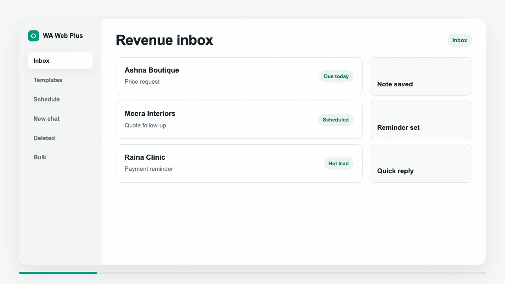

AR
Arya RetailQuote follow-up due today
Hot
Chrome extension for WA Web sales workflows
WA Web Utils adds CRM views, templates, scheduled follow-ups, broadcasts, new-number chat, and deleted-message history to the chat tab your team already uses.
Product tour
Open a lead view, start an unsaved-number chat, review deleted-message history, prepare broadcasts, and reuse answers without switching to a separate CRM tab.

Features
Use the extension as a practical command center for the repetitive jobs that slow down daily WA Web sales and support.
Organize missed chats, hot contacts, tagged conversations, and follow-ups into focused work queues.
Save repeat replies for pricing, onboarding, support answers, reminders, and product details.
Plan follow-ups at the right time so promising conversations do not sink in the chat feed.
Prepare careful outreach with templates, pacing, readiness checks, and visible send status.
Start chat conversations with new numbers faster, including local-number handling.
Review locally captured deleted-message records from Settings when the feature is enabled.
Daily flow
WA Web stays as the front office. WA Web Utils adds the structure: who needs a reply, which message to send, what should happen next, and whether a campaign is ready.
Compare
Operators
“Our replies feel organized now. I can see which chats need action before they get buried.”AmaraAdmissions coordinator
“Templates and scheduled follow-ups removed most of the copy-paste work from my day.”LinaSales consultant
“The bulk checks make campaign prep calmer because failures are visible before sending.”SanaCustomer success lead
Use cases
Run sales follow-ups, notes, tags, templates, scheduling, and chat exports from one Chrome workspace.
Read workflowTrack leads, notes, tags, reminders, and missed conversations inside the WA Web workspace.
Read workflowPrepare broadcast sends with templates, pacing, and visible readiness checks.
Read workflowSchedule chat messages and reminders around real customer timing.
Read workflowReview locally captured deleted-message records with sender, group, time, and context.
Read workflowFAQ
No. It runs as a Chrome extension on top of the WA Web workspace and adds workspace tools around your existing chats.
WA Web Utils is designed as a local-first browser extension. Settings, workspace data, templates, and deleted-message history are intended to stay in the browser unless exported.
Premium access is handled through ExtensionPay, with monthly, 6-month, and yearly plan options shown on this page.
Pricing
Choose the plan that matches how often your team works from the WA Web workspace.
loading/month
For short campaigns.
loading/6 months
Save 17%
loading/year
Save 33%
Ready
Use it inside the WA Web workspace with the plan that matches your team.